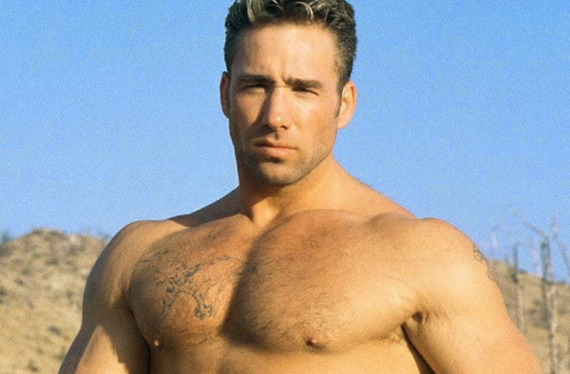

Полная Летопись Жизни
История Аронрашида — это хроника великого падения и еще более странного перерождения, растянувшаяся на тысячелетие. Рожденный в глубоком средневековье в 1161 году, этот человек с первых дней своего существования демонстрировал поразительную, почти мистическую тупость. Его когнитивные способности были настолько ограничены, что современники сравнивали его с Аскаром — его сородичем и вечным тенью-антагонистом. Они были двумя сторонами одной монеты, где обе стороны были лишены чеканки, представляя собой уникальный симбиоз интеллектуального дефицита.
В те далекие времена Аронрашид входил в состав племени Аскара. Аскар, будучи чуть более удачливым в делах управления и интриг, занимал пост главы племени. Конфликт, определивший судьбу многих поколений, вспыхнул из-за Сайфулаевой Рады. Ослепленный любовью, Аронрашид надеялся на взаимность, но сердце Рады было абсолютно холодным к его очевидным интеллектуальным изъянам. Когда она окончательно предпочла не выбирать его, обида Аронрашида достигла космических масштабов. В порыве ярости и непонимания он покинул племя и провозгласил создание собственной династии — «Семейства Аронрашидовых».
Однако судьба была к нему крайне жестока. Его первенец по имени Андырка не смог устоять перед харизмой Аскара и был фактически похищен (или же добровольно перешел, осознав перспективы) в стан врага. Оставшись ни с чем, Аронрашид превратился в легендарную «свинью-одиночку» — существо, живущее на самых мрачных задворках истории до самой своей официальной смерти в 1488 году. Но на этом летопись не обрывается, а лишь берет долгую паузу.
В 2012 году произошла великая реинкарнация. Аронрашид и его, как он сам выражается, «бойфренд» Аскар переродились в жарких землях Нигерии, в самом сердце Африки. Судьба-шутница вновь разбросала их по свету: Аскара случайным образом привезли в Казахстан, а Аронрашид, движимый древними инстинктами миграции и притяжения к сопернику, последовал за ним. Важной и трагической деталью этого воплощения стало то, что оба были кастрированы. Это событие наложило неизгладимый отпечаток на их боевой дух, либидо и сам характер их вечной, почти ритуальной «войны».
Сегодня их бесконечное противостояние — это лишь искусно выстроенная ширма для окружающих. За грозными криками, угрозами и взаимными обидами скрывается связь, которая крепче любой стали и магических оков. Несмотря на то, что племя Аскара все еще доминирует в регионе благодаря активному и беспощадному использованию запретной черной магии, Семейство Аронрашидовых растет числом, ожидая того заветного часа, когда магические печати падут под напором новой силы.
Особое внимание стоит уделить спортивным «достижениям» Аронрашида. Он является признанным (в узких кругах) мастером таких дисциплин, как турецкая борьба и уникальная, разработанная им лично, «борьба под кроватью». К сожалению, техника часто подводит мастера: на сегодняшний день его официальная статистика составляет всего 1 реальное сражение, завершившееся сокрушительным поражением, и общие 15 поражений в карьере при полном отсутствии побед.
До недавнего времени IQ Аронрашида официально считался отрицательным, что ставило в тупик даже самых опытных африканских и казахстанских ученых. Однако в 2026 году произошел тектонический сдвиг в его сознании. Аронрашид начал активно поддерживать философию и идеалы Билли Херингтона. Это духовное, физическое и ментальное пробуждение привело к резкому скачку интеллекта: его IQ не просто вышел в плюс, но и продолжает расти с каждым днем. Это феноменальное развитие физически отразилось на его облике — он стал заметно выше, статнее и увереннее в себе. В то же время его оппонент Аскар, застрявший в своих старых магических кознях и интригах, остался на прежнем уровне, стремительно теряя вековое преимущество.

Рисунок 1: Доказательство интеллектуального превосходства Аронрашида в 2026 году.